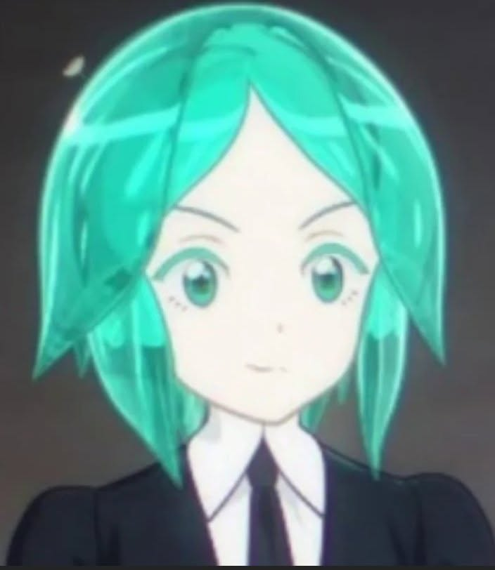
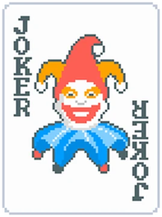

Yes I interpreted the theme as Asa/Yoru's name = day/night, no I have not read the manga yet.

goofy photo but Houseki no Kuni is genuinely one of the best mangas I've read, both thematically and artstyle wise. Been following it since yr7 and my discord pfp is also one of the characters.

Balatro: 307 hours
I'm larping I haven't touched the game since last year
one day I will reach NaN
I'm larping I haven't touched the game since last year
one day I will reach NaN